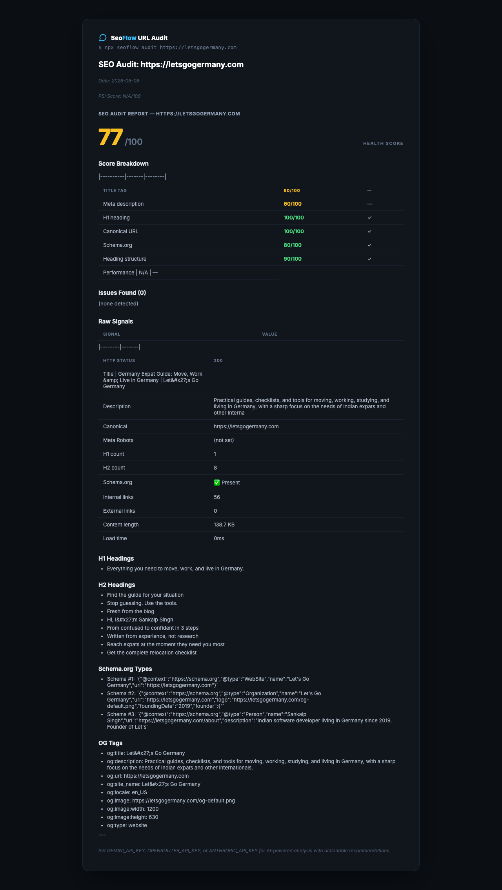

Portable, zero-lock-in SEO pipeline. Automated audits, internal link injection, image enrichment, AI content generation, fact-checking, and a self-learning priority system. Surfer / Clearscope / MarketMuse alternative.
Zero API keys for URL audits. Works with your own AI keys for full pipeline.
Everything you need for programmatic SEO, running locally in your repo. No per-seat pricing. No lock-in. No surprises.
No login, no per-seat pricing, no lock-in. Your content and API keys stay on your machine. Git-native, reviewable changes.
Technical, content, schema, local, GEO, drift, backlinks, programmatic, image-gen, llms-txt — installed into your AI coding tool automatically.
Gemini, OpenRouter, Anthropic, OpenAI-compatible, plus CLI agents. Set one key, it just works. Silent skip when optional APIs are missing.
Records what moved the needle on GSC and re-ranks the next run. Always work on the highest-leverage post.
No Ahrefs? No NeuronWriter? No Pexels? SeoFlow silently skips that step and keeps going. Never crashes because a key is missing.
npx seoflow audit https://yoursite.com — works with
zero API keys. Health score, AI action plan, and audit report saved locally.
Dependency-aware orchestrator with brain vault logging and LLM auto-fallback.
| # | Step | Description |
|---|---|---|
| 0 | Keywords | Ahrefs/SEMrush (if key) or Ubersuggest MCP → focusKeyword + related terms |
| 1 | Meta | Schema, description length, focusKeyword, lastModified fixes |
| 2 | Links | Inject internal links from your configured triggers |
| 3 | Images | Pexels/Unsplash fetch — 1 per H2 section (max 2) |
| 4 | Neuron | NeuronWriter NLP: target word count, missing terms, People Also Ask |
| 5 | Content | Gemini 2.5 Flash: FAQ, thin section expansion, NLP term weaving |
| 6 | Review | SEO review: 1-10 score, quick wins, auto-fix title/meta |
| 7 | Schema | Validate and generate Schema.org structured data (16 types) |
| 8 | Quality | Content quality audit (E-E-A-T signals, readability) |
| 9 | Technical | Broken links, redirects, canonical, hreflang, sitemap, robots, mobile |
| 10 | FactCheck | Price/claim verification via Google Search grounding |
| 11 | Report | Computed health score, issues, quick wins — saved locally |

Zero lock-in, runs in your repo, works with your own AI keys.
| Feature | Surfer SEO | Clearscope | MarketMuse | SeoFlow |
|---|---|---|---|---|
| Monthly cost | $89–$399 | $89–$299 | $99–$399 | Free (MIT) |
| Where it runs | SaaS dashboard | SaaS dashboard | SaaS dashboard | Your repo |
| AI provider | Locked in | Locked in | Locked in | Any OpenAI-compatible |
| Internal link injection | ✓ | ✓ | ✓ | ✓ + configurable triggers |
| Fact-checking | — | — | — | ✓ Google Search grounding |
| GEO/AEO monitoring | — | — | — | ✓ Built-in |
| Drift monitoring | ✓ | — | — | ✓ Built-in |
| Self-learning | — | — | — | ✓ Priority re-ranking |
| Lock-in risk | High | High | High | None |
Three zero-cost CLI tools built on the same idea: free engines + your own AI agent. MIT licensed, npm-published, no SaaS upsells.
AI-powered SEO pipeline — audit, internal links, content gen, GSC
You are hereIn less than a minute
# Zero-setup URL audit (no keys needed)
npx seoflow audit https://example.com
# Full pipeline install (one-liner)
bash <(curl -s https://raw.githubusercontent.com/imsankz/seoflow/main/install.sh)
# Or install via npm
npm install -D seoflow
npx seoflow init